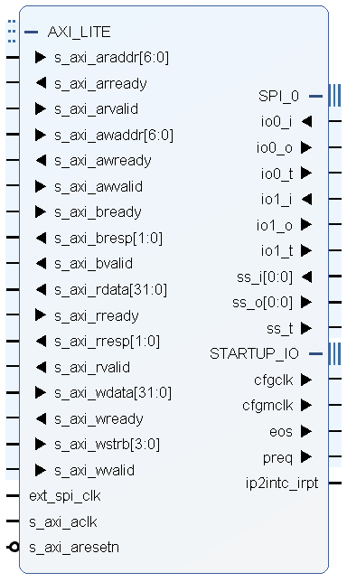

GPIO (Parallel): Uses multiple pins to transfer data in parallel, offering high-speed communication but requiring many GPIO pins, which can be complex to wire and debug.
I2C: A two-wire serial interface (SDA for data, SCL for clock) that is simple to wire and allows multiple devices on the same bus but operates at a slower speed compared to SPI, making it ideal for simpler displays.
SPI: Several variations, but generally a two to four wire serial interface that provides faster communication than I2C with fewer pins than GPIO, striking a balance between speed and pin usage for moderately complex displays.
This project implements the SPI interface to communicate with the OLED display.
The Advanced Microcontroller Bus Architecture (AMBA) is an open-standard interconnect system developed by ARM for efficient on-chip communication in System-on-Chip (SoC) designs. Key protocols include:
AHB (Advanced High-performance Bus): High-bandwidth, pipelined bus for fast data transfers, ideal for processors and high-speed peripherals.
APB (Advanced Peripheral Bus): Simplified, low-power bus for slower peripherals like GPIOs and timers, with reduced complexity.
AXI (Advanced eXtensible Interface): High-performance bus supporting multiple masters, separate read/write channels, and efficient memory access, used for data-intensive tasks.
ACE (AXI Coherency Extensions): Adds cache coherency for multi-core systems, crucial for synchronized data access.
CHI (Coherent Hub Interface): High-bandwidth protocol for data center applications, maintaining data coherency across distributed systems.

From Vivado AXI Quad SPI IP
Handshaking Signals:
The handshaking signals are based on a simple “Ready/Valid” principle:
Either state can be asserted first:
“A frequently misunderstood use of the Valid and Ready signals, and one which often results in incorrect and illegal implementations of the AXI4-lite protocol, is the assumption that the sender can/must wait for “Ready” to be asserted by the receiver before it asserts its “Valid” signal. This is an illegal use of the handshaking signals and can result in a deadlock situation arising. Ready can be asserted before Valid, but the sender must never wait for Ready as a pre-condition to commencing the transaction.”
| Signal Name | Size | Driven by | Description |
|---|---|---|---|
| S_AXI_ARADDR | 32 bits | Master | Address bus from AXI interconnect to slave peripheral. |
| S_AXI_ARVALID | 1 bit | Master | Valid signal, asserting that the S_AXI_AWADDR can be sampled by the slave peripheral. |
| S_AXI_ARREADY | 1 bit | Slave | Ready signal, indicating that the slave is ready to accept the value on S_AXI_AWADDR. |
| Signal Name | Size | Driven by | Description |
|---|---|---|---|
| S_AXI_RDATA | 32 bits | Slave | Data bus from the slave peripheral to the AXI interconnect. |
| S_AXI_RVALID | 1 bit | Slave | Valid signal, asserting that the S_AXI_RDATA can be sampled by the Master. |
| S_AXI_RREADY | 1 bit | Master | Ready signal, indicating that the Master is ready to accept the value on the other signals. |
| S_AXI_RRESP | 2 bits | Slave | A “Response” status signal showing whether the transaction completed successfully or whether there was an error. |
| RRESP State [1:0] | Condition | Description |
|---|---|---|
| 00 | OKAY | “OKAY” - The data was received successfully, and there were no errors. |
| 01 | EXOKAY | “Exclusive Access OK” - This state is only used in the full implementation of AXI4, and therefore cannot occur when using AXI4-Lite. |
| 10 | SLVERR | “Slave Error” - The slave has received the address phase of the transaction correctly but needs to signal an error condition to the master. Often results in a retry. |
| 11 | DECERR | “Decode Error” - This condition is not normally asserted by a peripheral but can be asserted by the AXI interconnect logic. It indicates the address doesn’t exist in the AXI interconnect address space. |
Write transactions are almost identical to the Read transactions discussed above, except that the Write Data Channel has one signal that is different to the Read Data Channel.
| Signal Name | Size | Driven by | Description |
|---|---|---|---|
| S_AXI_AWADDR | 32 bits | Master | Address bus from AXI interconnect to slave peripheral. |
| S_AXI_AWVALID | 1 bit | Master | Valid signal, asserting that the S_AXI_AWADDR can be sampled by the slave peripheral. |
| S_AXI_AWREADY | 1 bit | Slave | Ready signal, indicating that the slave is ready to accept the value on S_AXI_AWADDR. |
| Signal Name | Size | Driven by | Description |
|---|---|---|---|
| S_AXI_WDATA | 32 bits | Master | Data bus from the Master / AXI interconnect to the Slave peripheral. |
| S_AXI_WVALID | 1 bit | Master | Valid signal, asserting that the S_AXI_RDATA can be sampled by the Master. |
| S_AXI_WREADY | 1 bit | Slave | Ready signal, indicating that the Master is ready to accept the value on the other signals. |
| S_AXI_WSTRB | 4 bits | Master | A “Strobe” status signal showing which bytes of the data bus are valid and should be read by the Slave. |
| S_AXI_WSTRB [3:0] | S_AXI_WDATA active bits [31:0] | Description |
|---|---|---|
| 1111 | 11111111111111111111111111111111 | All bits active |
| 0011 | 00000000000000001111111111111111 | Least significant 16 bits active |
| 0001 | 00000000000000000000000011111111 | Least significant byte (8 bits) active |
| 1100 | 11111111111111110000000000000000 | Most significant 16 bits active |
| Signal Name | Size | Driven by | Description |
|---|---|---|---|
| S_AXI_BREADY | 1 bit | Master | Ready signal, indicating that the Master is ready to accept the “BRESP” response signal from the slave. |
| S_AXI_BRESP | 2 bits | Slave | A “Response” status signal showing whether the transaction completed successfully or whether there was an error. |
| S_AXI_BVALID | 1 bit | Slave | Valid signal, asserting that the S_AXI_BRESP can be sampled by the Master. |

An Inteltronic/Wisechip UG-2832HSWEG04 OLED Display is used on the ZedBoard. This provides a 128x32 pixel, passive-matrix, monochrome display. The display size is 30mm x 11.5mm x 1.45mm.
| Pin Number | Symbol | Zynq Pin | Function |
|---|---|---|---|
| Interface | |||
| 9 | RES# | U9 | Power Reset for Controller and Driver |
| 8 | CS# | N/C | Chip Select – Pulled Down on Board |
| 10 | D/C# | U10 | Data/Command Control |
| 11 | SCLK | AB12 | Serial Clock Input Signal |
| 12 | SDIN | AA12 | Serial Data Input Signal |
The UG-2832HSWEG04 is a 0.91-inch OLED display module featuring a 128×32 pixel resolution and a 4-wire Serial Peripheral Interface (SPI) for communication. This interface facilitates efficient data transfer between the display module and a microcontroller.
The display module utilizes the following pins for SPI communication:


References: